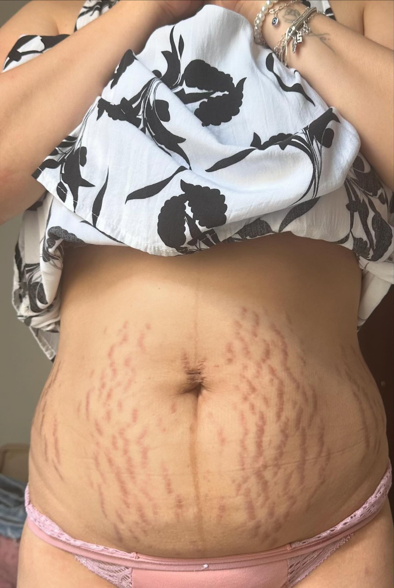
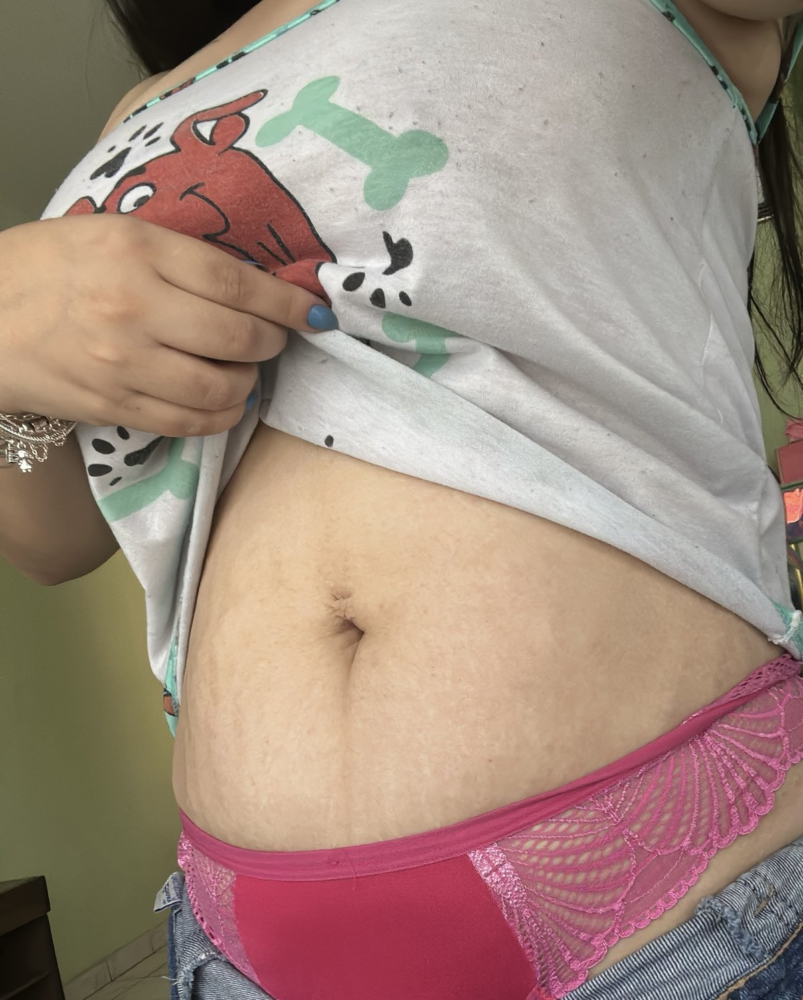

Corporal · Tatuapé
Protocolo Estria Free
Tratamento de estrias no Tatuapé com tecnologia de ponta para redução e atenuação, com resultados reais e documentados a partir da 2ª sessão.
Quero começar o protocolo★★★★★ 5,0 no Google · Rua Bom Sucesso, 220 · a 5 min do Metrô Tatuapé
Fotos da nossa própria clientela — resultados reais, sem filtro, sem edição.


O Protocolo Estria Free é o tratamento de estrias do Bella Beauty Club, no Tatuapé (Rua Bom Sucesso, 220, Edifício Platina). Atua em estrias vermelhas/roxas e brancas/prateadas no abdômen, glúteos, coxas e seios, com protocolo personalizado, acompanhamento fotográfico e resultados visíveis a partir da 2ª sessão. Atendimento exclusivo para mulheres, todos os dias das 9h às 21h. Agendamento pelo WhatsApp (11) 95241-2499.
Como funciona o Protocolo Estria Free
Tratamento de estrias no Tatuapé com tecnologia de ponta para redução e atenuação de estrias no abdômen, glúteos, coxas e seios — em fase ativa (vermelhas ou roxas) ou madura (brancas ou prateadas).
O protocolo estimula a regeneração tecidual profunda, com resultados visíveis a partir da 2ª sessão. É 100% personalizado, sessão a sessão, com acompanhamento fotográfico da sua evolução.
Qual tipo de estria você tem?
Estrias vermelhas ou roxas
Fase ativa, mais recente. A pele ainda está em processo de remodelação e costuma responder mais rápido ao protocolo.
Estrias brancas ou prateadas
Fase madura, mais antiga. Também melhoram com o tratamento contínuo e acompanhamento sessão a sessão.
Abdômen e glúteos
Regiões mais procuradas, comuns após ganho ou perda de peso, gestação e fase de crescimento.
Coxas e seios
Também tratados no protocolo, com ajuste de acordo com a região e a extensão das marcas.
Etapas do tratamento
Avaliação
Analisamos região, cor, tempo e extensão das estrias, pelo WhatsApp e presencialmente.
Protocolo personalizado
Definimos o protocolo ideal para o seu tipo de estria, ativa ou madura.
Sessões
Tecnologia que estimula a regeneração tecidual, ajustada a cada sessão.
Acompanhamento fotográfico
Registro da evolução ao longo do tratamento, com resultados visíveis a partir da 2ª sessão.
Por que fazer no Bella Beauty Club
Estúdio premium no Tatuapé com nota 5,0 no Google (55 avaliações), a 5 minutos do Metrô Tatuapé, no Edifício Platina. Atendimento exclusivo para mulheres, todos os dias das 9h às 21h, inclusive domingos mediante agendamento.
Atendemos Tatuapé, Anália Franco, Vila Carrão, Mooca, Penha, Belém e toda a zona leste de São Paulo.
Perguntas frequentes
O Protocolo Estria Free funciona em estrias brancas?
Sim. O protocolo trata estrias em fase ativa (vermelhas ou roxas) e maduras (brancas ou prateadas), estimulando a regeneração da pele. As vermelhas costumam responder mais rápido, mas as brancas também apresentam melhora com o tratamento contínuo.
A partir de quando aparecem os resultados do tratamento de estrias?
Os resultados costumam ser visíveis a partir da 2ª sessão. O protocolo é 100% personalizado, sessão a sessão, com acompanhamento fotográfico da evolução.
Quais regiões do corpo podem ser tratadas?
As áreas mais comuns são abdômen, glúteos, coxas e seios. Na avaliação, definimos o protocolo ideal para a sua região e o tipo de estria.
Qual a diferença entre estria vermelha e estria branca?
A estria vermelha ou roxa é recente (fase ativa), com a pele ainda em processo inflamatório e mais vascularizada. A estria branca ou prateada é madura, mais antiga e com menos irrigação. Por isso o protocolo é adaptado a cada fase.
O tratamento de estrias é personalizado?
Sim. Cada protocolo é definido após a avaliação, considerando região, cor, tempo e extensão das estrias, e é ajustado sessão a sessão.
Como funciona o acompanhamento dos resultados?
Fazemos registro fotográfico ao longo das sessões, para que você acompanhe a evolução com clareza. As fotos de antes e depois desta página são de clientes reais do Bella Beauty Club.
Onde fazer tratamento de estrias no Tatuapé?
No Bella Beauty Club, no Edifício Platina (Rua Bom Sucesso, 220, Conj. 17, Tatuapé), a 5 minutos do Metrô Tatuapé. Atendemos todos os dias, das 9h às 21h, com nota 5,0 no Google. Agende pelo WhatsApp (11) 95241-2499.
Atendem mulheres de outros bairros da zona leste?
Sim. Recebem clientes do Tatuapé, Anália Franco, Vila Carrão, Mooca, Penha, Belém e região, com atendimento exclusivo para mulheres.
Comece o seu protocolo
Avaliação pelo WhatsApp. No Tatuapé, com acompanhamento real de resultados.